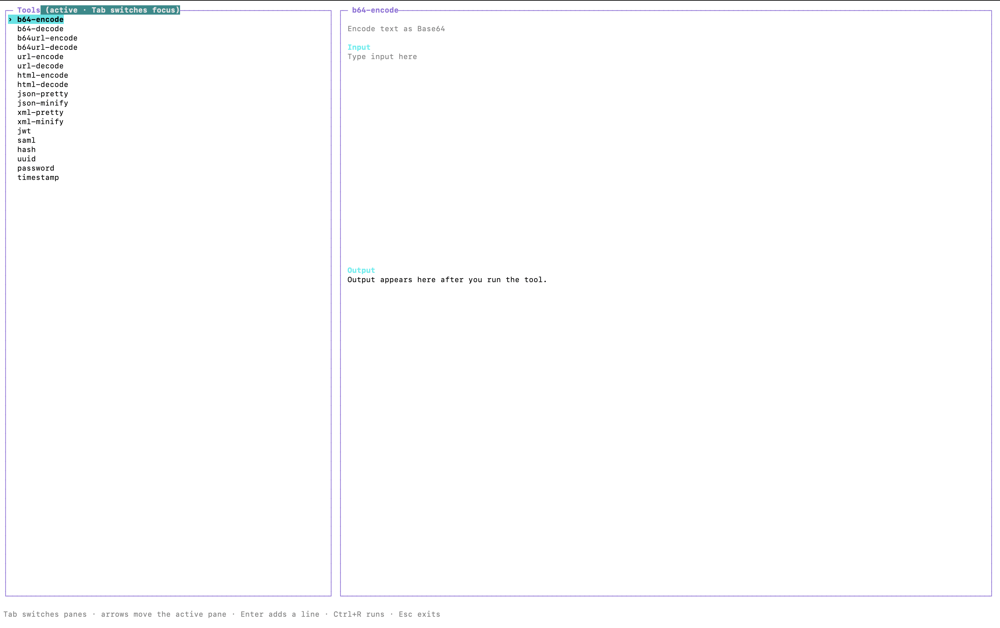

b64-encode
Encode text as Unicode-safe Base64.
uc b64-encode "hello"The terminal-native day-to-day utility toolbox for developers.
Encode, decode, format, generate, and inspect common support data without leaving your shell. Just run uc to show the interactive terminal UI, or use individual commands directly when you already know what you need.

uc.curl -fsSL https://raw.githubusercontent.com/pavinduLakshan/utilscli/main/install.sh | shThe installer downloads the correct binary from the latest GitHub release, installs it to ~/.local/bin, and adds that location to your shell startup file when needed. Open a new terminal afterwards.
uc b64-encode osidosodi
# b3NpZG9zb2RpRun uc without arguments to browse tools, edit input, and inspect output without leaving the terminal. Long results have a scrollable output pane with a visible position indicator.
After copying, the output pane shows a green ✓ Output copied confirmation. If there is no output or only terminal clipboard fallback is available, it shows a yellow explanatory message instead.
Every tool in the terminal UI is also available as an individual command, so workflows can be scripted or run directly from your shell.
Encode text as Unicode-safe Base64.
uc b64-encode "hello"Decode padded or unpadded Base64 text.
uc b64-decode aGVsbG8Encode URL-safe Base64 without padding.
uc b64url-encode "hello"Decode URL-safe Base64 text.
uc b64url-decode aGVsbG8Percent-encode a URL component using RFC 3986 rules.
uc url-encode "hello world"Decode a percent-encoded URL component.
uc url-decode hello%20worldEscape HTML special characters.
uc html-encode '<a href="/">'Decode common HTML entities.
uc html-decode '<hello>'Decode a JWT header and payload without verifying its signature.
uc jwt '<header>.<payload>.<signature>'Decode Base64 SAML XML, including Redirect-binding deflate.
uc saml '<base64-saml-message>'Validate and indent JSON.
uc json-pretty '{"enabled":true}'Validate JSON and remove insignificant whitespace.
uc json-minify '{ "enabled": true }'Validate and indent XML.
uc xml-pretty '<root><item>one</item></root>'Validate XML and remove whitespace-only text nodes.
uc xml-minify '<root> <item>one</item> </root>'Generate MD5, SHA-1, SHA-256, and SHA-512 hashes.
uc hash "hello"Generate a version 4 UUID; supports --count up to 100.
uc uuid --count 3Generate a random password; supports --length and --symbols.
uc password --length 24 --symbolsConvert a Unix timestamp or an RFC 3339 date.
uc timestamp 1710000000